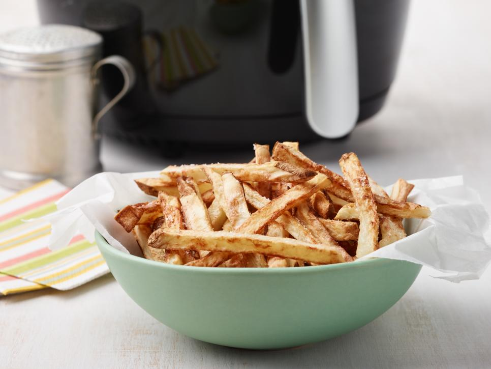

Air Fryer French Fries

Ingridients
- Nonstick cooking spray, for the basket
- 1 medium russet potato (about 6 ounces), unpeeled
- 1 teaspoon olive oil
- Kosher salt and freshly ground black pepper
Steps
- Preheat an air fryer to 380 degrees F and spray the basket with nonstick spray.
- Cut the potato in half lenghtwise, then into 1/4-inch slices. Cut the slices into 1/4-inch sticks. Put the fries in a medium bowl and rinse them well with cold water, then drain and pat dry with paper towels.
- Toss the fries with the oil in a medium bowl, then sprinkle with 1/2 teaspoon salt and several grinds of peper. Working in batches if necessary, put the fries in an even layer in the air fryer basket with no overlapping and cook, turning them halfway through, until golfen bron and crisp, 14 to 16 minutes. Remove and season with salt.